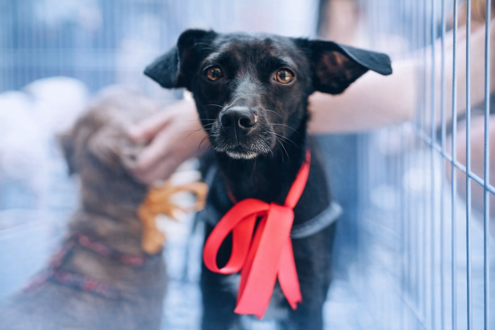
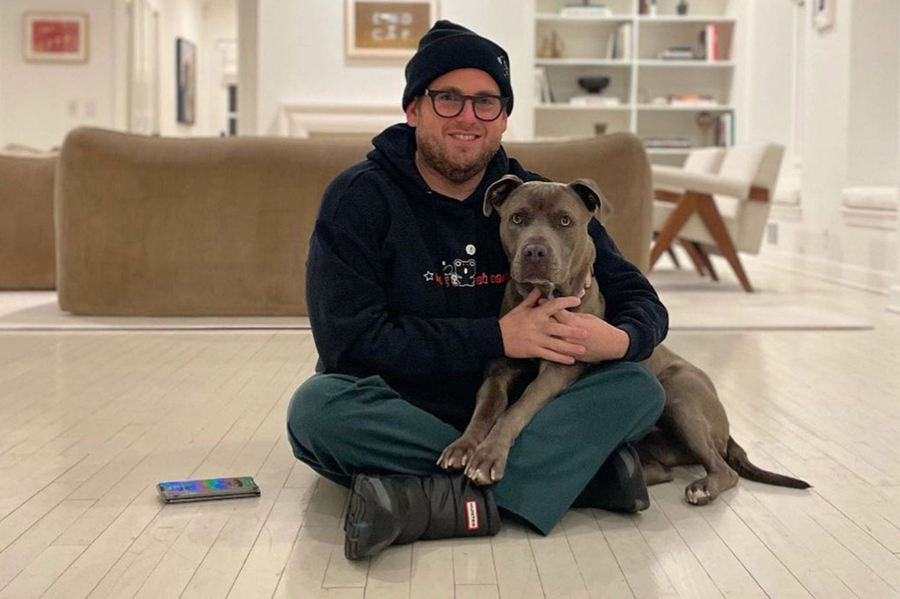
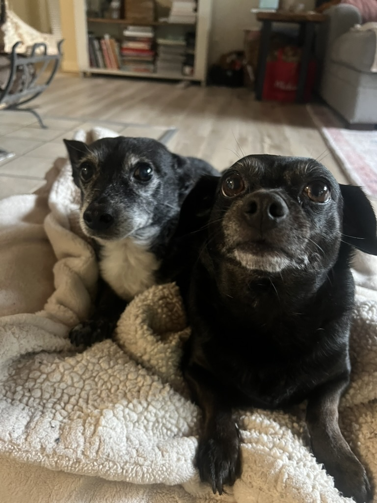
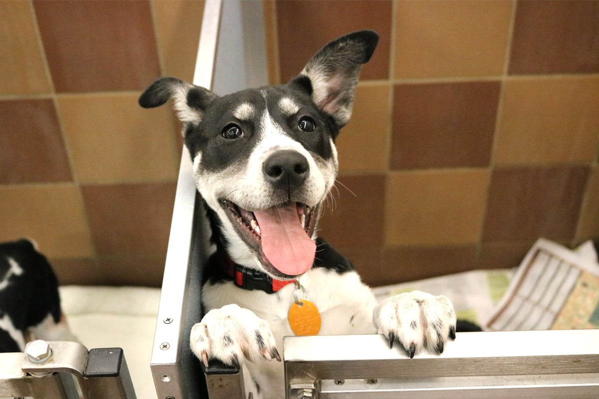

Adoption saves lives, challenges harmful stereotypes, and gives shelter dogs the loving homes they deserve.
Every year, thousands of dogs enter animal shelters after being abandoned, surrendered, or rescued from unsafe conditions. Some arrive because their owners faced financial hardship, housing problems, family changes, or other life circumstances that made keeping a pet impossible. Others are rescued from neglect, unsafe breeding situations, or life on the street. No matter how they arrive, these dogs depend on shelters and rescue organizations for care and protection. Adoption matters because it gives these animals a second chance at safety, care, and love.
Choosing to adopt does not just change one dog’s life. According to SPCA Albrecht Center , the impact of pet adoption also helps reduce shelter overcrowding and supports the important work shelters do for animals in need. When one dog is adopted, space opens for another animal to receive food, medical attention, shelter, and the possibility of a future home. Adoption therefore has both an individual impact and a broader community impact. It helps the animal who is adopted, but it also improves conditions for the animals still waiting.
Many rescue dogs are healthy, loyal, and ready to become loving pets. They are not less worthy because they came from shelters. In many cases, adoption is also more affordable than buying from a breeder, since shelters often provide vaccinations, spay or neuter services, and basic medical care. Beyond cost, however, the most important reason adoption matters is ethical. It prioritizes animals who already need homes rather than increasing demand for more breeding while so many dogs are still waiting in shelters. By adopting, people make a compassionate choice that helps both animals and the community.

Animal adoption is often treated like a private decision, but it is also a public issue. When shelters become overcrowded, resources become stretched. Staff and volunteers have to care for more animals with limited space, time, and funding. Dogs may spend longer periods in kennels, which can increase stress and anxiety. Long shelter stays may also make animals less visible to adopters over time, especially if people are drawn first to puppies, small breeds, or dogs without stigmatized labels.
At the same time, many people still choose breeders or pet stores because they want a certain breed, a younger dog, or what they believe is a more predictable pet. These assumptions are shaped by cultural ideas about purity, training, and status. Rescue dogs are often unfairly compared to dogs sold as products. This is why public awareness matters. If people better understand how shelters work, why dogs end up there, and what adoption actually offers, they may be more willing to see rescue dogs as individuals rather than stereotypes.
This context strengthens the argument for adoption. The issue is not simply whether someone wants a dog. The issue is what kind of social values guide that choice. Adoption reflects compassion, responsibility, and a willingness to respond to a real need rather than ignore it.
Many people avoid adoption because of common myths about rescue dogs. These ideas often sound convincing, but they are usually based on stereotype rather than reality. Challenging these myths is important because false assumptions prevent dogs from being adopted and make shelter overcrowding worse.
Many shelter dogs are surrendered because of housing, money, illness, or family changes, not because they are dangerous. According to the ASPCA , pet owners often rehome animals because of life circumstances. A rescue dog’s behavior depends more on training, care, and environment than on the fact that it came from a shelter.
Shelters do not offer just one kind of dog. Dogs in shelters vary in age, size, breed, and energy level, and some may already be house-trained. According to Humane World for Animals , shelters and rescues often have animals with different backgrounds and needs, which means many adopters can find a dog that fits their lifestyle.
Rescue dogs are not less loving than dogs from breeders. Love and attachment are shaped by care, trust, and daily experience. According to Humane World for Animals , many adopted animals already know how to live with people, other pets, or children. What matters most is the bond built after adoption, not where the dog came from.
Pit bulls are often misunderstood and judged by stereotypes instead of as individual dogs. According to Best Friends Animal Society , aggression is not a breed trait, and behavior depends more on treatment, environment, and experience than breed alone. Judging dogs by labels instead of behavior makes it harder for many loving shelter dogs to be adopted.
Animal shelters across the United States are facing a serious overcrowding crisis. According to Shelter Animals Count, more animals are entering shelters while adoption rates have declined, leaving many dogs waiting longer for homes. These longer stays can increase stress, reduce attention, and make dogs less visible to adopters. Overcrowding is not just about space. It also affects dogs’ quality of life and makes care harder for shelter staff.
This concern is also expressed in the article Development of a New Welfare Assessment Protocol for Practical Application in Long-Term Dog Shelters , which found that inadequate space and poor shelter conditions can negatively affect dogs’ welfare.
These facts matter because they show that adoption is not just a personal preference. It is part of a larger system of animal welfare. Every adoption helps relieve pressure on shelters and gives another dog the chance to receive care, attention, and the possibility of a permanent home. Looking at the issue through facts and statistics helps make clear that adoption is both a compassionate and practical response to overcrowding.
One of the strongest arguments for adoption is the way rescue dogs can heal and thrive once they are given care and stability. Dogs that may seem shy, anxious, or withdrawn in a shelter often change dramatically in a loving home. With patience, routine, and trust, many begin to show affection, confidence, and playful energy that may not have been visible before. Their transformation reminds people that a shelter environment does not define a dog’s true personality.
As People’s feature on celebrities who adopted dogs suggests, public adoption stories can help normalize rescue and show that adoption is a meaningful and responsible choice.
Success stories also challenge the assumption that rescue dogs are somehow less worthy or more difficult than other pets. In reality, many adopted dogs become deeply bonded companions who bring comfort, loyalty, and joy to their families. These stories matter because they give a human and emotional face to the issue. They show that adoption is not only about solving overcrowding, but also about creating hopeful new beginnings for animals that deserve a second chance.

Many people, including celebrities, choose to adopt rescue dogs, helping show that adoption is a meaningful way to give dogs a loving home and a second chance.

One of my dogs was originally my neighbor’s foster dog, and we ended up falling in love with him and adopting him. My other dog was adopted from Salinas SPCA.
Supporting shelter dogs does not begin and end with adoption. People can help in many ways, including fostering, volunteering, donating, and sharing shelter animals online. Each of these actions helps reduce pressure on shelters and increases the chances that dogs will find safe and permanent homes.
Click an icon below to explore different ways you can help shelter dogs and support animal rescue efforts.
Adoption gives a shelter dog a second chance at safety, love, and a permanent home. Choosing adoption also helps reduce overcrowding and supports the work shelters do every day.
